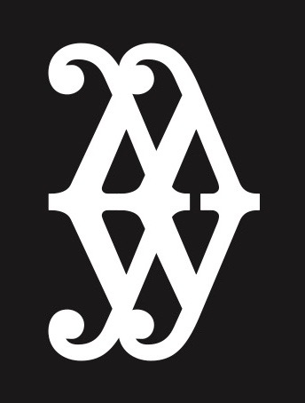
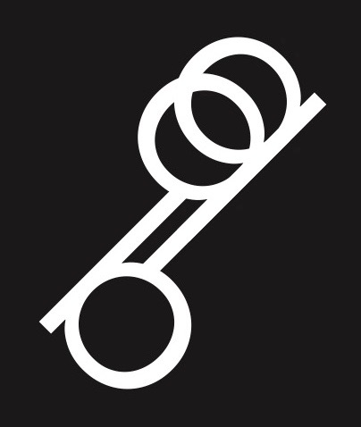
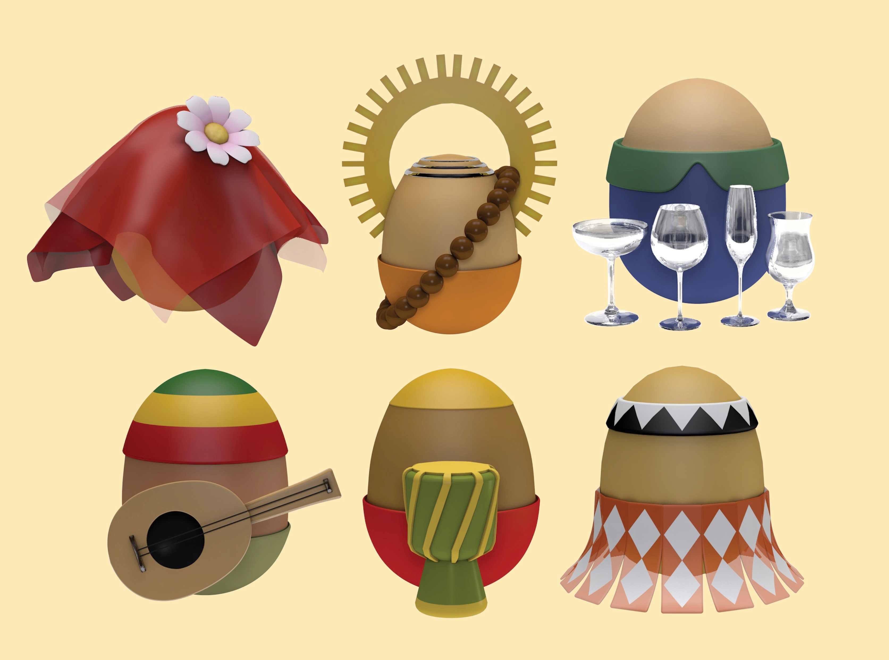

Contrarian-Utopian
Examples of Contrarian-Utopian Design
Boobkulele: Unconventionally designed to fit the purpose better

Traffic Signs: Recreated in a less traditional way to solve potentially misleading delivery
Letter Symbols: Unusual way of using text to create an identity


Mood Waves: Collection of survey answers
on mood, displayed in an unconventional form


Street Performance Archive Icons:
